Can the Cloud Drive? Infrastructure Feasibility of Offloading Autonomous Driving Across 5G and 6G
When can autonomous-driving inference move from every vehicle to shared edge-cloud infrastructure?
University of Minnesota Twin Cities
Preprint July 2026 arXiv:2607.09045
Paper overview
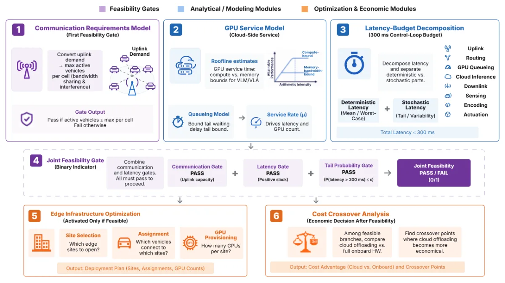
The paper evaluates communication, compute latency, and cost in sequence before declaring an offloading branch viable.
- 3
- feasibility gates
- 1,296
- scenarios
- 10
- official figures
- 5G–6G
- 5G through 6G
Can the cloud run an autonomous-driving model?
Yes—but the system must pass three tests in order. First, the network must upload the vehicle’s data. Next, the cloud GPU must return a result within the driving deadline. Only then does it make sense to ask whether shared cloud hardware costs less than a computer in every vehicle.
The result in one sequence
Cloud driving must pass three tests.
The paper tests the network first, GPU response time second, and cost last. If a scenario fails one test, the later tests cannot rescue it.
Why VLA compute is slow
VLA waits on memory, not just math.
The paper’s Roofline model separates the time a GPU spends doing arithmetic from the time it spends moving model weights through memory.
The memory reads dominate. A vision-language-action (VLA) model connects visual perception, language reasoning, and driving actions in one large model.
The encoder and prefill stages mainly use the GPU’s arithmetic units. The autoregressive decoder works differently: it produces reasoning and trajectory outputs one step at a time.
The VLA decoder generates an action one step at a time. At every step, the GPU must read the model weights from high-bandwidth memory again.
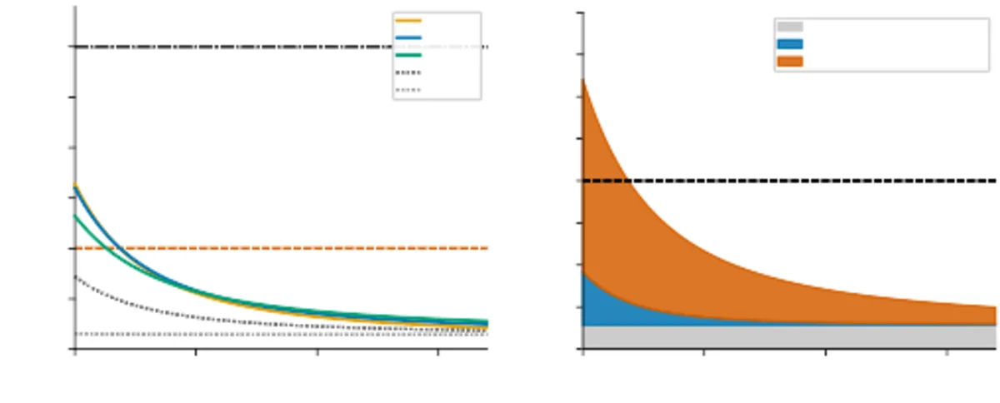
Figure 8: The left panel shows when each model fits the deadline. The right panel shows why VLA decoding improves with memory bandwidth, not just more arithmetic throughput.- 39 ms
- Do the mathEncoder and prefill in a compute-only estimate.
- +114 ms
- Read the weightsAutoregressive reasoning and trajectory decoding.
- 153 ms
- Cloud inferenceThe memory-aware total before the rest of the driving loop.
Scope: This is the paper’s 2025 B300 raw-sensor offloading example for its calibrated FP16, dense, single-request autoregressive VLA stack. It is not a universal VLA benchmark.
Across S1–S3, the complete deterministic VLA floor is 132–164 ms in 2025. It first falls below 100 ms around 2027, but that floor is only a lower bound: network and queueing delays still have to fit. At the dense NYC reference point, 6G admits VLA-S2 around 2028; 5G-Advanced does not pass the same 100 ms case.
Interactive model
Test a cloud-driving scenario.
Choose values from the paper’s 1,296-branch scenario grid. Results are analytical estimates from arXiv:2607.09045v1—not production safety guidance.
Reference scenario
Compute is the first binding gate.
VLA · S2 · 5G-Advanced · 10% penetration · 45% utilization · 2028
-
01
Communication
Pass 9.9 active vehicles/cell; 25 Mbps target uplink. -
02
Compute + tail latency
Does not pass The deterministic floor clears 100 ms, but the loaded 5G-Advanced scheduling tail does not. -
03
Cost
Not evaluated Cost is withheld until communication and latency both pass.
Analytical estimate based on the paper’s NYC fleet, cell-count, hardware-evolution, and cost assumptions.
Where should the pipeline split?
Choose where the model splits.
S1 Raw sensor
Upload the raw sensors
100 Mbps
Uploads camera, LiDAR, and radar streams. It leaves only encoding onboard, but dense cells reach the communication cliff early.
S2 Feature level
Upload compressed features
25 Mbps
Keeps the vision backbone local and offloads compressed features. This is where VLA feasibility and the cost crossover concentrate.
S3 Query level
Upload compact queries
3 Mbps
Uploads compact scene queries after the transformer encoder. It is easiest on the network but preserves much of the vehicle hardware cost.
| Strategy | Experimental uplink | Residual TOPS: E2E / VLM / VLA | Cloud TFLOPs: E2E / VLM / VLA |
|---|---|---|---|
| S1 | 100 Mbps | 5 / 5 / 5 | 1.7 / 24.7 / 60.0 |
| S2 | 25 Mbps | 16 / 226 / 550 | 1.39 / 20.17 / 49.0 |
| S3 | 3 Mbps | 82 / 1194 / 2900 | 0.06 / 0.82 / 2.0 |
The complete visual evidence
See the evidence from the paper.
Every chart and diagram below comes from the official arXiv source. Captions preserve the paper’s conditions; the added note explains the role each figure plays in the argument.
Showing all 10 figures.
{kind=link}
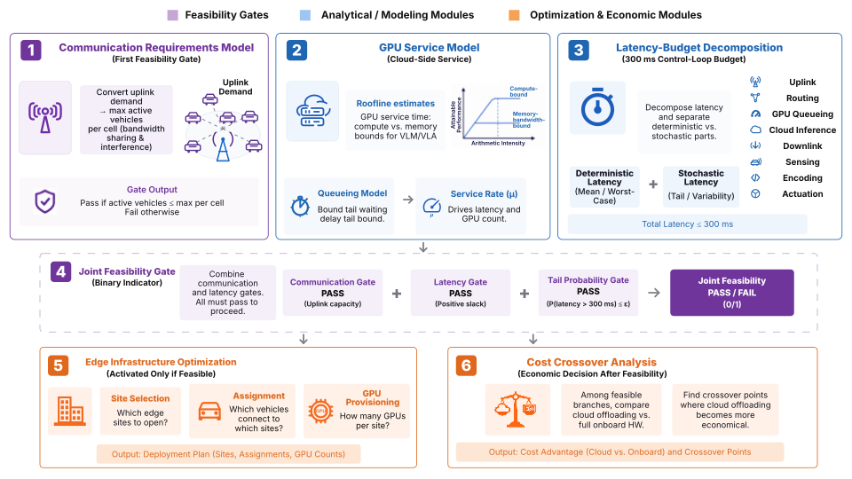
Why it matters: Cost matters only after communication and latency pass.
{kind=link}
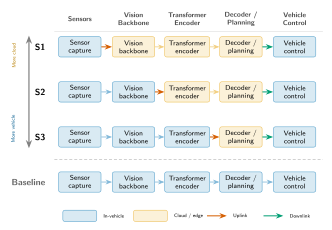
Why it matters: Moving more work into the vehicle reduces uplink demand but requires more onboard hardware.
{kind=link}
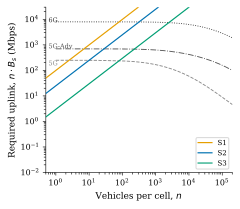
Why it matters: A cell has a hard vehicle limit because demand rises while shared capacity falls.
{kind=link}
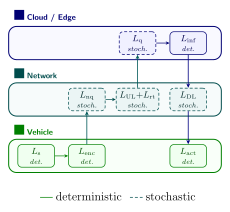
Why it matters: GPU inference is only one part of the full driving loop.
{kind=link}
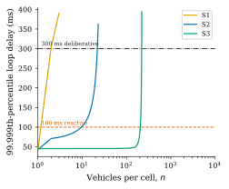
Why it matters: A scenario can pass on average and still fail during a rare delay spike.
{kind=link}
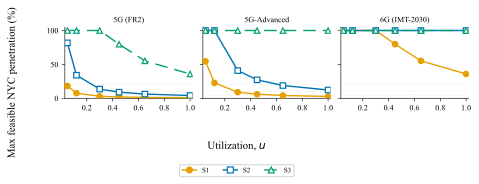
Why it matters: The number of active vehicles—not just the total fleet—sets network load.
{kind=link}
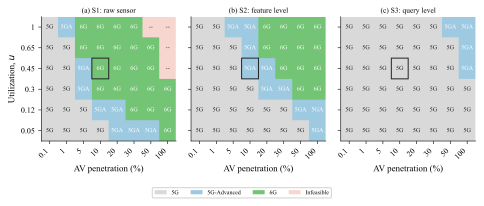
Why it matters: S2 cuts network demand without keeping most of the expensive VLA model in the vehicle.
{kind=link}
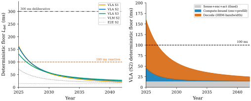
Why it matters: Faster 6G cannot speed up repeated reads from GPU memory.
{kind=link}
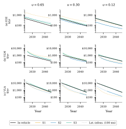
Why it matters: Shared GPUs help most when expensive VLA hardware would otherwise sit idle.
{kind=link}
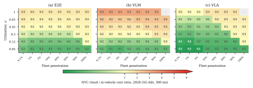
Why it matters: S2 is often the lowest-cost VLA option after the latency tests pass.
What the figures add up to
Five takeaways.
- 01The tests happen in order.
The network passes first, GPU response time passes second, and cost comes last.
- 025G-Advanced is the first practical step for S2.
Plain 5G runs out of feature-upload capacity at the dense NYC reference point.
- 03VLA waits on GPU memory.
Autoregressive decoding repeatedly reads model weights from HBM and dominates the 2025 compute time.
- 04Low utilization makes sharing more valuable.
Cloud pooling avoids buying peak VLA hardware for every parked vehicle.
- 05S2 is the middle ground.
It needs less uplink than S1 and less onboard compute than S3.
Go to the source
Read and cite the paper.
The preprint contains the complete analytical framework, equations, parameter tables, literature review, and policy discussion.
BibTeX
@article{parsa2026cloud,
title={Can the Cloud Drive? Infrastructure Feasibility of Offloading Autonomous Driving Across 5G and 6G},
author={Parsa, Pouya and Han, Kawon and Choi, Seongjin},
journal={arXiv preprint arXiv:2607.09045},
year={2026}
}